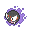
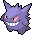
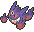
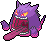
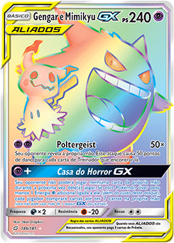
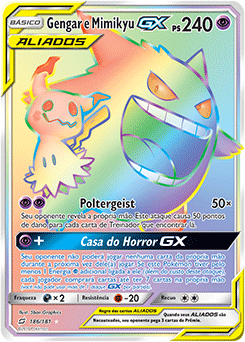

O Mais Amado
Sem sombra de duvidas, um dos pokemons mais adorados do tipo fantasma é o Gengar, isso se dá pelo fato de sua personalidade cativante e por ter sido um pokemon treinado por Ash.Gengar são tipicamente mesquinhos e gostam de atormentar as pessoas, machucando-as e ultrapassando-as. Eles são mais ativos durante as luas cheias, rastejando na calada da noite e se disfarçando de sombras; eles podem até entrar em casas adormecidas para se esconder no escuro. Eles imitarão todos os movimentos que seus alvos fizerem até que baixem a guarda. Então, eles atacam, drenando a força vital de suas vítimas como sustento.
| # | Icone | Nome | Tipo 1 | Tipo 2 |
|---|---|---|---|---|
| 092 |  | Gastly | ||
| 093 |  |
Haunter | ||
| 094 |  | Gengar | ||
| 094 |  | Mega Gengar | ||
| 094 |  | Gigantamax Gengar |
 

Gengar é um Pokémon bípede roxo escuro com um corpo arredondado. Tem olhos vermelhos, uma boca larga que geralmente se curva em um sorriso sinistro e orelhas pontudas. Em suas costas há numerosos espinhos e tem espinhos menores no topo de sua cabeça, semelhantes a pêlos tufosos. Seus braços e pernas são curtos com três dígitos em ambas as mãos e pés. Ele também tem uma cauda curta. Gengar tem a habilidade de se esconder perfeitamente na sombra de qualquer objeto, garantindo uma furtividade excepcional. No entanto, o corpo de Gengar age como um dissipador de calor. Sua presença esfria a temperatura da área circundante em quase 10°F (5°C), porque absorve o calor. O anime mostrou que Gengar pode voar, possuir pessoas e outros Pokémon e estender sua língua por vários metros. Na Geração I